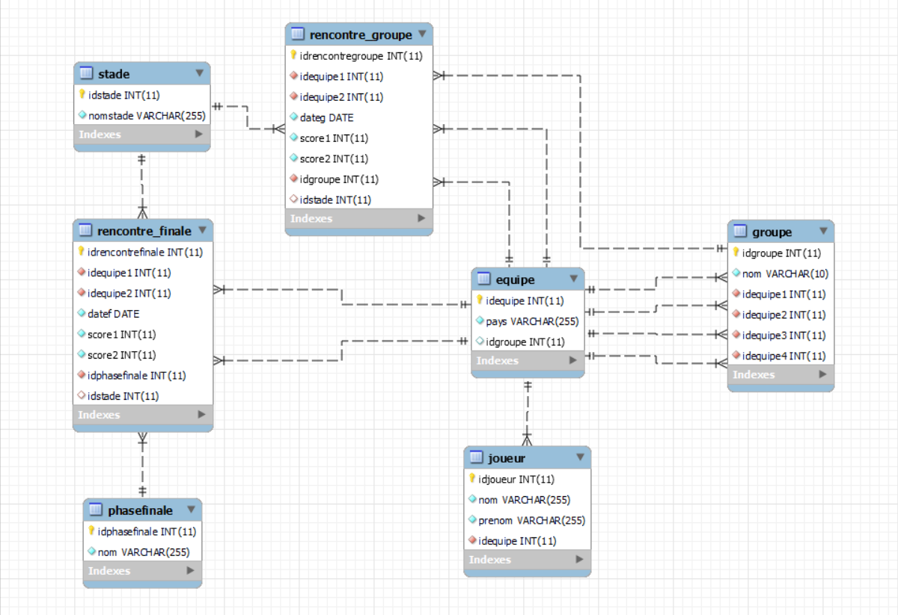

SQL
C'est un langage qu'on utilise pour programmer en orienté objet (POO).
C'est un langage qu'on utilise pour programmer en orienté objet (POO).
Voici mes projets SQL!
Bonjour a tous, ici vous trouverez mes projets sql que j'ai pu réalisé au cours de ma scolarité ou dans le cadre personelle. Ce portefolio est mis a jours quotidiennement pour pouvoir suivre ma progression au cours de mes etudes.
Voici l’interview de Yamina BENAZZI, employé du Crédit Agricole Assurance, en tant que Product Owner. Cette entreprise vend aux clients des contrats d’assurances dans différents domaines (assurance habitation, voiture…)
Oui j’ai réalisé le modèle de données du Crédit Agricole Assurance. En effet l’entreprise a lancé un projet de refonte de leur SID (Système d’Information décisionnel) pour améliorer le pilotage de l’entreprise. L’ancienne Base de données développée avec Oracle devenait de moins en moins performante pour répondre aux différents demandes d’analyse des données des métiers.
La base de données sert à :
L’entreprise possède deux bases de données :
La base de données fournit des informations organisées en table ou relation. Elle contient une table (CLIENT) qui permet de stocker l’ensemble des clients du Crédit Agricole. Cette table contient un identifiant unique par client (numClient) et des informations sur le client : nom, prénom, date de naissance, etc…
Les principaux problèmes rencontrés sont :
| NOM RUBRIQUE | TYPE | DESCRIPTION |
|---|---|---|
| numClient | A | Numéro de client |
| nomClient | A | Nom du client |
| prenomClient | A | Prénom du client |
| dateNaissance | A | Date de naissance du client |
| numAgence | A | Numéro de l’agence |
| nomAgence | A | Nom de l’agence |
| adresseAgence | A | Adresse de l’agence |
| numContrat | A | Numéro de contrat |
| dateSignature | A | Date de signature du contrat |
| dateFinContrat | A | Date de fin du contrat |
| numOffre | A | Numéro de l’offre |
| nomOffre | A | Nom de l’offre |
| prixOffreHT | A | Prix de l’offre HT |
| prixOffreTTC | C | Prix de l’offre TTC (Prix HT * TVA) |
| TVA | P | Taux de TVA (fixe) |
| numVehicule | A | Numéro de véhicule |
| ImmatVehicule | A | Immatriculation du véhicule |
| marqueVehicule | A | Marque du véhicule |
| DatePremiereCircu | A | Date de première mise en circulation |
| numEmployé | A | Numéro de l’employé |
| nomEmployé | A | Nom de l’employé |
| prenomEmploye | A | Prénom de l’employé |
| FonctionEmploye | A | Fonction de l’employé |
Voici un projet en SQL que j'ai créé qui consiste a avoir une base de donnée d'un tournois de la coupe du monde. J'ai utiliser MySQL Workbench pour la creation de la base de donnée.
Voici une image de la base de donnée: 
J'ai aussi fais des intertions de données dans la base pour pouvoir faire des tests.
Voici une image des types de requete utiliser: